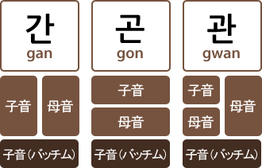
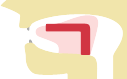
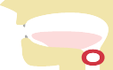

<!doctype html>
<html lang="ja">
  <head>
    <meta charset="utf-8">
    <meta http-equiv="X-UA-Compatible" content="IE=edge">
    <meta name="description" content="A front-end template that helps you build fast, modern mobile web apps.">
    <meta name="viewport" content="width=device-width, initial-scale=1.0, minimum-scale=1.0">
    <title>韓国語</title>

    <!-- Add to homescreen for Chrome on Android -->
    <meta name="mobile-web-app-capable" content="yes">
    <link rel="icon" sizes="192x192" href="images/android-desktop.png">

    <!-- Add to homescreen for Safari on iOS -->
    <meta name="apple-mobile-web-app-capable" content="yes">
    <meta name="apple-mobile-web-app-status-bar-style" content="black">
    <meta name="apple-mobile-web-app-title" content="Material Design Lite">
    <link rel="apple-touch-icon-precomposed" href="images/ios-desktop.png">

    <!-- Tile icon for Win8 (144x144 + tile color) -->
    <meta name="msapplication-TileImage" content="images/touch/ms-touch-icon-144x144-precomposed.png">
    <meta name="msapplication-TileColor" content="#3372DF">

    <link rel="shortcut icon" href="images/favicon.png">
    <link rel="stylesheet" href="https://code.getmdl.io/1.1.3/material.deep_purple-pink.min.css">
    <link rel="stylesheet" href="styles.css">
    <link rel="stylesheet" href="https://fonts.googleapis.com/icon?family=Material+Icons">

    <!-- <link rel="stylesheet" href="https://fonts.googleapis.com/icon?family=Material+Icons">
    <link rel="stylesheet" href="https://code.getmdl.io/1.1.3/material.indigo-pink.min.css"> -->
    <script defer src="https://code.getmdl.io/1.1.3/material.min.js"></script>
  </head>
  <body class="mdl-demo mdl-color--grey-100 mdl-color-text--grey-700 mdl-base">
    <div class="mdl-layout mdl-js-layout mdl-layout--fixed-header">
      <header class="mdl-layout__header mdl-layout__header--scroll mdl-color--primary">
      <!-- Colored mini FAB button -->
        <button class="mdl-button mdl-js-button mdl-button--fab mdl-button--mini-fab mdl-button--colored" onclick="location.href='index.html'">
          <i class="material-icons">chevron_left</i>
        </button>
        <!-- <div> 発音＆書き方 </div> -->
      </header>

      <!-- 文法のカード表示-->
      <main class="mdl-layout__content">
        <div class="mdl-layout__tab-panel is-active" id="overview" >
          <section class="section--center mdl-grid mdl-grid--no-spacing mdl-shadow--2dp">
            <div class="mdl-card mdl-cell mdl-cell--12-col">
              <div class="mdl-card__supporting-text">
                <h4>パッチムとは</h4>
                「子音+母音+子音」で一番最後に来る子音をパッチムといいます。 支えるものという意味になります。

                <div>
                  <h5>パターン</h5>
                  発音に差はありません。
                  
                </div>
                <br/><br/>
                
                <div>
                  <h5>バッチムの種類と発音</h5>
                  19個の子音字のうち、バッチムとして使われるのは16個です。しかも、バッチムの音である終声は7種類しかありません。
                </div>

                <div class="table-responsive-vertical shadow-z-1">
                  <h5>1文字のバッチム</h5>
                  <table id="table" class="table table-hover table-mc-light-blue table-bordered">
                    <thead>
                      <tr>
                        <th>終終</th>
                        <th>バッチム(子音字)</th>
                        <th>発音の音</th>
                        <th>イメージ</th>
                      </tr>
                    </thead>
                    <tbody>
                      <tr>
                        <td data-title="終終">ㄱ</td>
                        <td data-title="バッチム(子音字)">ㄱ,ㄲ,ㅋ</td>
                        <td data-title="発音の音">악</td>
                        <td data-title="イメージ"></td>
                      </tr>
                      <tr>
                        <td data-title="終終">ㅇ</td>
                        <td data-title="バッチム(子音字)">ㅇ</td>
                        <td data-title="発音の音">앙</td>
                        <td data-title="イメージ"></td>
                      </tr>
                      <tr>
                        <td data-title="終終">ㄴ</td>
                        <td data-title="バッチム(子音字)">ㄴ</td>
                        <td data-title="発音の音">안</td>
                        <td data-title="イメージ"></td>
                      </tr>
                      <tr>
                        <td data-title="終終">ㄷ</td>
                        <td data-title="バッチム(子音字)">ㄷ,ㅌ,ㅅ,ㅆ<br/>ㅈ,ㅊ,ㅎ</td>
                        <td data-title="発音の音">앋</td>
                        <td data-title="イメージ"></td>
                      </tr>
                      <tr>
                        <td data-title="終終">ㄹ</td>
                        <td data-title="バッチム(子音字)">ㄹ</td>
                        <td data-title="発音の音">알</td>
                        <td data-title="イメージ"></td>
                      </tr>
                      <tr>
                        <td data-title="終終">ㅁ</td>
                        <td data-title="バッチム(子音字)">ㅁ</td>
                        <td data-title="発音の音">암</td>
                        <td data-title="イメージ"></td>
                      </tr>
                      <tr>
                        <td data-title="終終">ㅂ</td>
                        <td data-title="バッチム(子音字)">ㅂ</td>
                        <td data-title="発音の音">압</td>
                        <td data-title="イメージ"></td>
                      </tr>
                    </tbody>
                  </table>
                </div>

                <div>
                  <h5>2文字のバッチム</h5>
                  <p>バッチムの中には、異なる子音字を2つ組み合わせたものがあります。
                  この場合、一部の例外を除き、右左とちらを発音するのが決まっています。そのルールは以下のようで「ㄱ」,「ㅁ」,「ㅍ」以外は左の発音になります。<br/>
                  </p>
                  <p>例）값, 닭</p>

                  <h6>右側を発音する</h6>
                  

                  <h6>左側を発音する</h6>
                  
                </div>

              </div>             
            </div>
          </section>
        </div>   

        <!-- footer  -->
        <footer class="mdl-mega-footer">
          <div class="mdl-mega-footer--middle-section">
            <div class="mdl-mega-footer--drop-down-section">
              milkfrog
            </div>
          </div>
        </footer>

      </main>
    </div>
  </body>
</html>